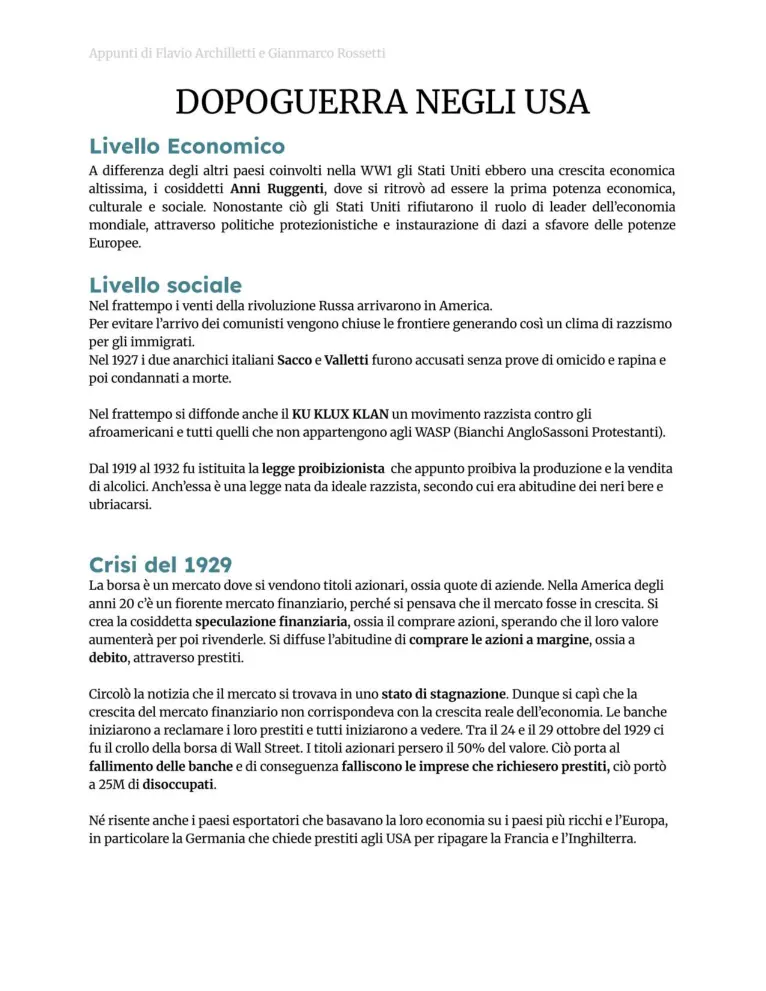
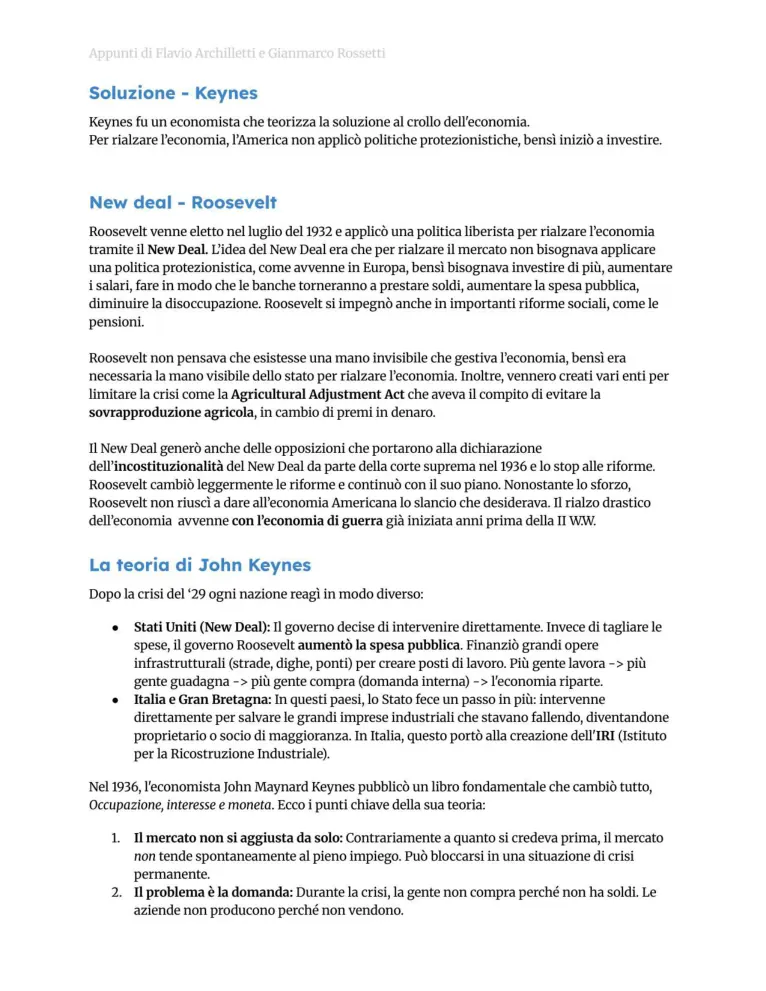

Dopoguerra negli USA e crisi del 1929
Anni ruggenti, consumi, speculazione, crollo di Wall Street e New Deal.
Studio guidato
Anni Venti americani
Dopo la guerra gli USA diventano una potenza economica centrale. Produzione di massa, credito al consumo, pubblicità, automobili ed elettrodomestici alimentano gli anni ruggenti.
Contraddizioni
La crescita non è equilibrata: agricoltura in difficoltà, salari non sempre adeguati, sovrapproduzione e speculazione borsistica rendono fragile il sistema.
Crollo del 1929
Il crollo di Wall Street nel 1929 trasforma la bolla speculativa in crisi economica. Fallimenti bancari, chiusure industriali e disoccupazione diffondono la Grande Depressione.
New Deal
Con Roosevelt lo Stato interviene di più nell’economia. Il New Deal sostiene lavori pubblici, regolazione finanziaria, aiuti sociali e rilancio della domanda, ispirandosi anche a idee keynesiane.
Effetti
La crisi mostra i limiti del liberismo puro e influenza tutto il mondo, perché l’economia internazionale dipende sempre di più dal credito e dal mercato statunitense.
Parole chiave
Pagine originali dal file
Le immagini sotto mantengono il riferimento diretto alle pagine del PDF usato come base del sito.


Quiz finale
Devi rispondere correttamente a tutte le 12 domande. Se ne sbagli anche solo una, il quiz si azzera e ricomincia da capo.